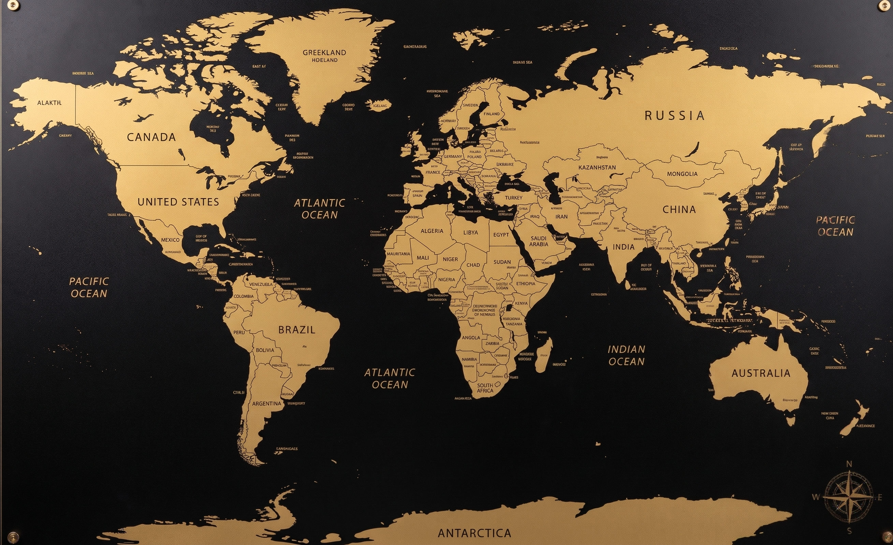

OSOBNÍ PORTFOLIO
PETR JAKL
TECHNOLOGIE · STRATEGIE · GLOBÁLNÍ PŘEHLED

HLAVNÍ OBLASTI ZÁJMU
↗
01
Technologie
Moderní technologie, inovace, digitální vývoj, robotika a technologická budoucnost.
ZOBRAZIT VÍCE →
↗
02
Mezinárodní vztahy
Mezinárodní spolupráce, geopolitika, světová ekonomika a globální souvislosti.
ZOBRAZIT VÍCE →